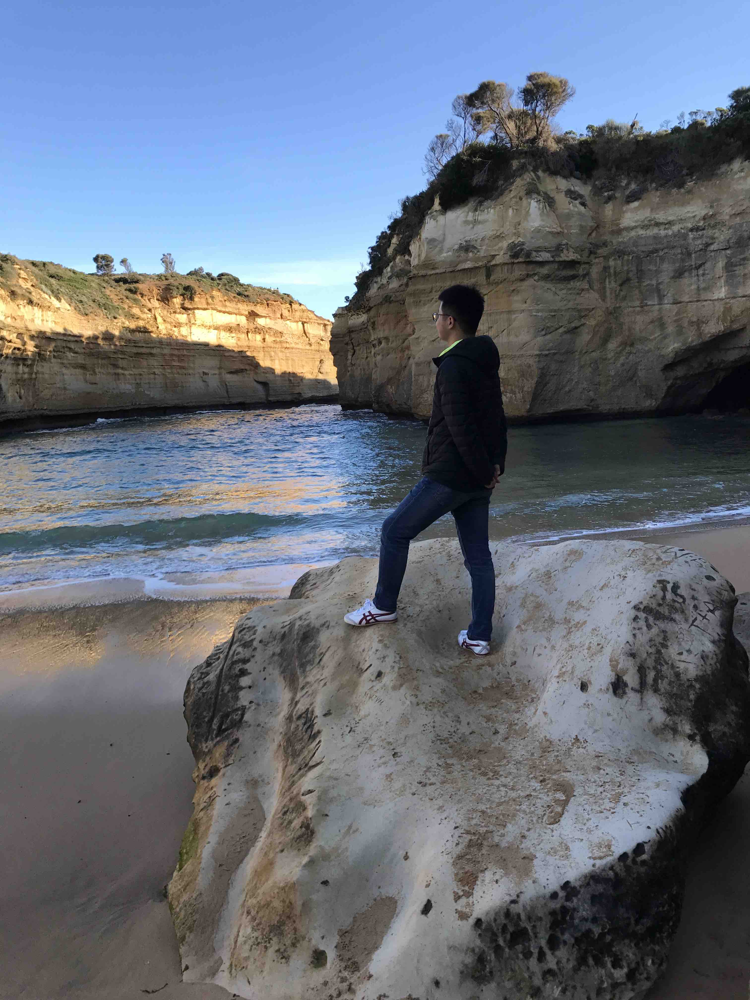

Dr. Qiang Gao 高强
School of Computing and Artificial Intelligence, SWUFE
Engineering Research Center of Intelligent Finance, Ministry of Education
Kash Institute of Electronics and Information Industry
Research Interests
I am leading the Geospatial Intelligence and Social Computing (GeoSoc) group at NiceLab, and also serve as one of the team leaders at the Research Team of Trustworthy Artificial Intelligence R&D and Application. Broadly, my research focuses on Spatiotemporal Data Mining (SDM), including mobility learning, spatio-temporal representation learning, and LLM (multimodal)-based GIS. Recently, I am interested in Open Spatiotemporal Intelligence for Financial and Economic Systems, e.g., quantitative trading and market (enterprise) analysis. Our group has established deep collaborations with Iowa State University (ISU), University of Maryland (UMD), Chinese University of Hong Kong (CUHK), Vrije University Amsterdam, and more.
Mobility Mining
Deep learning for human mobility, trajectory representation, and next-location prediction.
Spatiotemporal Data Mining
Spatial-temporal graph neural networks, urban flow inference, and crime prediction.
Open-world Learning
Anomalous trajectory recognition, continual learning, and open-world state space models.
AI for FinEconTech
Stock selection, market analysis, and enterprise resilience via spatiotemporal intelligence.
News
- 课题组主要关注时空数据挖掘与财经科技，主要涉及开放时空表征建模及其在企业关系分析、证券市场分析、产业链安全应用等。
- I am looking for motivated MSc, PhD, and Postdoc to join my research group. Please feel free to contact me if you are interested in my research area. 课题组诚招时空数据处理方向博士后1名（西南财经大学光华博士后-管理科学与工程）
- 课题组常年招收博士生、硕士生，名额充足。
Selected Publications
- Qiang Gao. "Deep Learning and Semantic Dynamics of Human Mobility", Encyclopedia of GIS, Third edition, Springer, 2025. [chapter]
2026
- Jian Lang, Rongpei Hong, Meihui Zhong, Kaiju Li, Ting Zhong, Qiang Gao, and Fan Zhou. "LEAF: Towards Lightweight Explainable Hateful Video Detection via Self-Grounding CoT Guided Stage-Wise Distillation", The 64th Annual Meeting of the Association for Computational Linguistics, ACL 2026 Findings. Accepted
- Yanzhe Xie, Tuohang Li, Heng Wang, Yujun Ge, Li Huang, Qiang Gao*. "Frequency-Aware Dynamic Graph Learning via Pseudo-Spectral Decomposition for Metro Flow Forecasting", ICASSP 2026. Accepted
- Jian Lang, Rongpei Hong, Ting Zhong, Leiting Chen, Qiang Gao, Fan Zhou. "From Shallow Humor to Metaphor: Towards Label-Free Harmful Meme Detection via LMM Agent Self-Improvement", The 32nd SIGKDD Conference on Knowledge Discovery and Data Mining, KDD 2026. Accepted
- Yanzhe Xie, Li Huang, Qiang Gao*, Xueqin Chen, Fan Zhou, Kunpeng Zhang. "Beyond Graph Priors: A Co-evolving Framework under Uncertainty for Enterprise Resilience Assessment", The 40th Annual AAAI Conference on Artificial Intelligence, AAAI 2026. Accepted
- Jiao Li, Jian Lang, Xikai Tang, Wenzheng Shu, Ting Zhong, Qiang Gao, Yong Wang, Leiting Chen, and Fan Zhou. "Shedding the Facades, Connecting the Domains: Detecting Shifting Multimodal Malicious Content with Test-Time Adaptation", The 40th Annual AAAI Conference on Artificial Intelligence, AAAI 2026. Accepted
2025
- Li Huang, Yujie Wu, Xiaolong Song, Qiang Gao*, Goce Trajcevski, and Xueqin Chen. "Enhancing Urban Region Representation via Adaptive Risk-aware Consensus Learning", The 33rd ACM SIGSPATIAL International Conference on Advances in Geographic Information Systems, SIGSPATIAL 2025. Accepted
- Xueqin Chen, Xiaoyu Huang, Qiang Gao*, Li Huang, Jiaojing Yu, and Guisong Liu. "Birds of a Feather: Enhancing Multimodal Fake News Detection via Multi-Element Retrieval", The 41st IEEE International Conference on Data Engineering, ICDE 2025. [Paper]
- Qiang Gao, Zizheng Wang, Li Huang, Goce Trajcevski, Guisong Liu, and Xueqin Chen. "Responsive Dynamic Graph Disentanglement for Metro Flow Forecasting", The 39th Annual AAAI Conference on Artificial Intelligence, AAAI 2025. [Paper] Oral
- Li Huang, Haowen Liu, Qiang Gao*, Jiajing Yu, Guisong Liu, and Xueqin Chen. "Adversity-aware Few-shot Named Entity Recognition via Augmentation Learning", The 39th Annual AAAI Conference on Artificial Intelligence, AAAI 2025. [Paper] Oral
- Li Huang, Yanzhe Xie, Qiang Gao*, Kunpeng Zhang, Guisong Liu, and Xueqin Chen. "Progressive Dependency Representation Learning for Stock Ranking in Uncertain Risk Contrasting", The 31st SIGKDD Conference on Knowledge Discovery and Data Mining, KDD 2025. [Paper]
2024
- Jianfei Sun#, Qiang Gao#, Cong Wu, Yuxian Li, Jiacheng Wang, and Dusit Niyato. "Secure Resource Allocation via Constrained Deep Reinforcement Learning", The Sixth International Conference on Machine Learning for Cyber Security, ML4CS 2024. [Paper] Best Paper Award
- Haoran Li, Qiang Gao, Hongmei Wu, and Li Huang. "Advancing Event Causality Identification via Heuristic Semantic Dependency Inquiry Network", The 2024 Conference on Empirical Methods in Natural Language Processing, EMNLP 2024. [Paper]
- Qiang Gao, Zizheng Wang, Li Huang, Goce Trajcevski, Kunpeng Zhang, and Xueqin Chen. "Enhancing Dependency Dynamics in Traffic Flow Forecasting via Graph Risk Bootstrap", The 32nd ACM SIGSPATIAL International Conference on Advances in Geographic Information Systems, SIGSPATIAL 2024. [Paper]
- Qiang Gao, Xiaolong Song, Li Huang, Goce Trajcevski, Fan Zhou, and Xueqin Chen. "Enhancing Fine-Grained Urban Flow Inference via Incremental Neural Operator", The 33rd International Joint Conference on Artificial Intelligence, IJCAI-24. [Paper]
- Kai Yang, Yi Yang, Qiang Gao, Ting Zhong, Yong Wang, and Fan Zhou. "Self-Explainable Next POI Recommendation", The 47th International ACM SIGIR Conference on Research and Development in Information Retrieval, SIGIR 2024. [Paper]
- Jinyu Hong, Ping Kuang, Qiang Gao*, Fan Zhou. "Disentanglement-Guided Spatial-Temporal Graph Neural Network for Metro Flow Forecasting (Student Abstract)", The Thirty-Eighth AAAI Conference on Artificial Intelligence, AAAI 2024. [Paper]
- Hongzhu Fu, Fan Zhou, Qing Guo, Qiang Gao*. "Spatial-Temporal Augmentation for Crime Prediction (Student Abstract)", The Thirty-Eighth AAAI Conference on Artificial Intelligence, AAAI 2024. [Paper]
2023
- Qiang Gao, Xiaojun Shan, Yuchen Zhang, and Fan Zhou. "Enhancing Knowledge Transfer for Task Incremental Learning with Data-free Subnetwork", Thirty-seventh Conference on Neural Information Processing Systems, NeurIPS 2023. [Paper]
- Qiang Gao, Xiaohan Wang, Chaoran Liu, Goce Trajcevski, Li Huang, Fan Zhou. "Open Anomalous Trajectory Recognition via Probabilistic Metric Learning", The 32nd International Joint Conference on Artificial Intelligence, IJCAI 2023. [Paper]
- Qiang Gao, Hongzhu Fu, Yutao Wei, Li Huang, Xingmin Liu, and Guisong Liu. "Spatial-Temporal Diffusion Probabilistic Learning for Crime Prediction", The 16th International Conference on Knowledge Science, Engineering and Management, KSEM 2023. [Paper]
- Li Huang, Kai Liu, Chaoran Liu, Qiang Gao*, Xiao Zhou, and Guisong Liu. "HBay: Predicting Human Mobility via Hyperspherical Bayesian Learning", The 16th International Conference on Knowledge Science, Engineering and Management, KSEM 2023. [Paper] [Best Paper Award]
- Li Huang, Hongmei Wu, Qiang Gao*, Guisong Liu. "ATTENTION LOCALNESS IN SHARED ENCODER-DECODER MODEL FOR TEXT SUMMARIZATION", 2023 IEEE International Conference on Acoustics, Speech and Signal Processing, ICASSP 2023. [Paper]
- Miaomiao Li, Jiaqi Zhu, Xin Yang, Yi Yang, Qiang Gao, Hongan Wang. "CL-WSTC: Continual Learning for Weakly Supervised Text Classification on the Internet", The 2023 ACM Web Conference, WWW 2023. [Paper]
- Jinyu Hong, Fan Zhou, Qiang Gao*, Kuang Ping, Kunpeng Zhang. "Mobility Prediction via Sequential Trajectory Disentanglement (Student Abstract)", The Thirty-Seventh AAAI Conference on Artificial Intelligence, AAAI 2023. [Paper]
- Yujie Li, Yuxuan Yang, Qiang Gao*, Xin Yang. "Cross-regional Fraud Detection via Continual Learning (Student Abstract)", The Thirty-Seventh AAAI Conference on Artificial Intelligence, AAAI 2023. [Paper]
2022 & Earlier
- Joojo Walker, Ting Zhong, Fengli Zhang, Qiang Gao and Fan Zhou. "Recommendation via Collaborative Diffusion Generative Model", The 15th International Conference on Knowledge Science, Engineering and Management, KSEM 2022. [Paper]
- Fan Zhou, Rongfan Li, Qiang Gao, Goce Trajcevski, Kunpeng Zhang, Ting Zhong. "Dynamic Manifold Learning for Land Deformation Forecasting", Thirty-Sixth AAAI Conference on Artificial Intelligence, AAAI 2022. [Paper]
- Qiang Gao, Fan Zhou, Goce Trajcevski, Fengli Zhang, Xucheng Luo. "Adversity-based Social Circles Inference via Context-Aware Mobility", 2020 IEEE Global Communications Conference, GLOBECOM 2020. [Paper]
- Qiang Gao, Goce Trajcevski, Fan Zhou, Kunpeng Zhang, Ting Zhong, and Fengli Zhang. "DeepTrip: Adversarially Understanding Human Mobility for Trip Recommendation", The 27th ACM SIGSPATIAL International Conference on Advances in Geographic Information Systems, SIGSPATIAL 2019. [Paper]
- Qiang Gao, Fan Zhou, Goce Trajcevski, Kunpeng Zhang, Ting Zhong and Fengli Zhang. "Predicting Human mobility via Variational Attention", The World Wide Web Conference, WWW 2019. [Paper] [Code]
- Qiang Gao, Goce Trajcevski, Fan Zhou, Kunpeng Zhang, Ting Zhong and Fengli Zhang. "Trajectory-based Social Circle Inference", The 26th ACM SIGSPATIAL International Conference on Advances in Geographic Information Systems, SIGSPATIAL 2018. [Paper] [Code]
- Fan Zhou, Qiang Gao, Goce Trajcevski, Kunpeng Zhang, Ting Zhong, Fengli Zhang. "Trajectory-User Linking via Variational AutoEncoder", IJCAI 2018. [Paper]
- Qiang Gao, Fan Zhou, Kunpeng Zhang, Goce Trajcevski, Xuecheng Luo, Fengli Zhang. "Identifying Human Mobility via Trajectory Embeddings", IJCAI 2017. [Paper] [Code]
2026
- Li Huang, Letian Ning, Chaoran Liu, Rong Zhang, Qiang Gao*, and Goce Trajcevski. "Dual-Offset Trajectory Recovery on Roads with Dynamic Transition Probability", IEEE Transactions on Intelligent Transportation Systems, 2026. Accepted
- Li Huang, Yanzhe Xie, Zizheng Wang, Qiang Gao*, Kunpeng Zhang, and Philip S. Yu. "Understanding Interactive Stock Dynamics via Sensitivity-aware Dependency Learning", IEEE Transactions on Knowledge and Data Engineering, 2026. Accepted
2025
- Qiang Gao, Letian Ning, Li Huang, Chaoran Liu, Xueqin Chen, and Fan Zhou. "Aligning Authentic Location Shares with Mobility Information Bottleneck", IEEE Transactions on Big Data, 2025. Accepted
- Haolun Ding, Zhengwen Fu, Rong Zhang, Li Huang, Xuan Luo, and Qiang Gao*. "Probabilistic Bayesian Learning with Long-Tail Awareness for Trajectory-User Linking", Neural Networks, 2025. [Paper]
- Hongzhu Fu, Yutao Wei, Gege Chen, Xing He, Qiang Gao, and Fan Zhou. "Augmented Graph Information Bottleneck with Type-Aware Periodicity Heterogeneity for Explainable Crime Prediction", Information Processing and Management, 2025. [Paper]
- Xueqin Chen, Xiaoyu Huang, Qiang Gao*, Li Huang, and Guisong Liu. "Enhancing Text-centric Fake News Detection via External Knowledge Distillation from LLMs", Neural Networks, 2025. [Paper]
- Yanlong Huang, Wenxin Tai, Fan Zhou, Qiang Gao, Ting Zhong, and Kunpeng Zhang. "Extracting Key Insights from Earnings Call Transcript via Information-Theoretic Contrastive Learning", Information Processing and Management, 2025. [Paper]
2024
- Qiang Gao, Chaoran Liu, Li Huang, Goce Trajcevski, Qing Guo, and Fan Zhou. "Learning to Discover Anomalous Spatiotemporal Trajectory via Open-World State Space Model", Knowledge-Based Systems, 2024. [Paper]
- Qiang Gao, Zhengxiang Liu, Li Huang, Kunpeng Zhang, Jun Wang, and Guisong Liu. "Relational Stock Selection via Probabilistic State Space Learning", IEEE Transactions on Knowledge and Data Engineering, 2024. [Paper]
- Yujie Li, Xin Yang, Qiang Gao, Hao Wang, Junbo Zhang, and Tianrui Li. "Cross-regional Fraud Detection via Continual Learning with Knowledge Transfer", IEEE Transactions on Knowledge and Data Engineering, 2024. [Paper]
- Nan Liu, Fengli Zhang, Qiang Gao and Xueqin Chen. "Contrastive Learning with Edge-wise Augmentation for Rumor Detection", International Journal of Intelligent Systems, 2024. [Paper]
- Li Huang, Pei Li, Qiang Gao*, Guisong Liu, Zhipeng Luo, and Tianrui Li. "Diffusion Probabilistic Model for Bike-sharing Demand Recovery with Factual Knowledge Fusion", Neural Networks, 2024. [Paper]
- Zhipeng Luo, Qiang Gao, Yazhou He, Hongjun Wang, Milos Hauskrecht, and Tianrui Li. "Hierarchical Active Learning with Label Proportions on Data Regions", IEEE Transactions on Knowledge and Data Engineering, 2024. [Paper]
- Qiang Gao*, Xinzhu Zhou, Li Huang, Kunpeng Zhang, Siyuan Liu, and Fan Zhou. "Relational Fusion-based Stock Selection with Neural Recursive Ordinary Differential Equation Networks", Information Fusion, 2024. [Paper]
2023
- Qiang Gao, Jinyu Hong, Xovee Xu, Ping Kuang, Fan Zhou, and Goce Trajcevski. "Predicting Human Mobility via Self-supervised Disentanglement Learning", IEEE Transactions on Knowledge and Data Engineering, 2023. [Paper]
- Xovee Xu, Zhiyuan Wang, Qiang Gao, Ting Zhong, Bei Hui, Fan Zhou, and Goce Trajcevski. "Spatial-Temporal Contrasting for Fine-Grained Urban Flow Inference", IEEE Transactions on Big Data, 2023. [Paper]
- Qiang Gao, Hongzhu Fu, Kunpeng Zhang, Goce Trajcevski, Xu Teng, and Fan Zhou. "Inferring Real Mobility in Presence of Fake Check-ins Data", ACM Transactions on Intelligent Systems and Technology, 2023. [Paper]
- Xin Yang, Metoh Adler LOUA, Meijun Wu, Li Huang, Qiang Gao. "Multi-granularity Stock Prediction with Sequential Three-way Decisions", Information Sciences, 2023. [Paper]
- Qiang Gao, Wei Wang, Li Huang, Xin Yang, Tianrui Li and Hamido Fujita. "Dual-grained Human Mobility Learning for Location-aware Trip Recommendation with Spatial-temporal Graph Knowledge Fusion", Information Fusion, 2023. [Paper]
- Qiang Gao, Fan Zhou, Xin Yang and Guisong Liu. "When Friendship Meets Sequential Human Check-ins: Inferring Social Circles with Variational Mobility", Neurocomputing, 2023. [Paper]
2022 & Earlier
- Qiang Gao, Fan Zhou, Ting Zhong, Goce Trajcevski, Xin Yang and Tianrui Li. "Contextual Spatio-Temporal Graph Representation Learning for Reinforced Human Mobility Mining", Information Sciences, 2022. [Paper]
- Qiang Gao, Wei Wang, Kunpeng Zhang, Xin Yang, Congcong Miao and Tianrui Li. "Self-supervised Representation Learning for Trip Recommendation", Knowledge-Based Systems, 2022. [Paper]
- Qiang Gao, Zhipeng Luo, Diego Klabjan and Fengli Zhang. "Efficient Architecture Search for Continual Learning", IEEE Transactions on Neural Networks and Learning Systems, 2022. [Paper]
- Fan Zhou, Yurou Dai, Qiang Gao, Pengyu Wang, and Ting Zhong. "Self-Supervised Human Mobility Learning for Next Location Prediction and Trajectory Classification", Knowledge-Based Systems, 2021. [Paper]
- Qiang Gao, Fan Zhou, Goce Trajcevski, Kunpeng Zhang, Ting Zhong and Fengli Zhang. "Adversarial Human Trajectory Learning for Trip Recommendation", IEEE Transactions on Neural Networks and Learning Systems, 2021. [Paper]
- Qiang Gao, Fengli Zhang, Fuming Yao, Ailing Li, Lin Mei and Fan Zhou. "Adversarial Mobility Learning for Human Trajectory Classification", IEEE Access, 2020. [Paper]
- Qiang Gao, Fengli Zhang, Ruijin Wang, and Fan Zhou. "Trajectory big data: a review of key technologies in data processing", Journal of Software, 2016, 28(4): 959-992. [Paper]
Some Funds
- Fundamental Research Funds for the Central Universities. Grant No. JBK2406078 (PI, 2024.6-2025.6)
- Science and Technology Program of Sichuan Province, Grant No. 2023ZYD0145 (PI, 2023.12-2024.12)
- Chengdu Science and Technology Program, Grant No. 2023-JB00-00016-GX (PI, 2023-2025)
- National Natural Science Foundation of China, Grant No. 62102326 (PI, 2022.01-2024.12)
- Natural Science Foundation of Sichuan Province, Grant No. 2023NSFSC1411 (PI, 2023.01-2024.12)
- The Fundamental Research Funds for the Central Universities (PI, Key Grant, 2021)
- Guanghua Talent Project of SWUFE (PI, 2023-2025)
Activities & Services
Conference & Journal Organization
- Posters and Short Papers Chair, ACM SIGSPATIAL, 2026
- Senior Program Committee Member, IJCAI, 2026
- Program Committee Member, AAAI, 2026
- Program Committee Member, ECAI, 2025
- Program Committee Member, IJCAI, 2025/2026
- Program Committee Member, PAKDD, 2026
- Program Committee Member, ICDE (Demonstration track), 2025
- Session Chair, IJCAI, 2024
- Program Committee Member, MDM, 2023-2025
- Program Committee Member, KSEM, 2022-2025
- Program Committee Member, SISAP, 2023/2024
- Program Committee Member, ACM SIGSPATIAL, 2021-2025
- Program Committee Member, EAI CollaborateCom, 2020
- etc.
Reviewing for
- NeurIPS 2025
- CVPR 2026
- IEEE Transactions on Knowledge and Data Engineering
- IEEE Transactions on Neural Networks and Learning Systems
- IEEE Transactions on Systems Man Cybernetics-Systems
- IEEE Transactions on Intelligent Transportation Systems
- ACM Transactions on Knowledge Discovery from Data
- IEEE Internet of Things
- Neural Networks
- Information Fusion
- Knowledge-Based Systems
- Engineering Applications of Artificial Intelligence
- Pattern Recognition
- Applied Soft Computing
- Expert Systems With Applications
- Neurocomputing
- Information Sciences
- GeoInformatica
- ACM Transactions on Asian and Low-Resource Language Information Processing
- ACM Transactions on Spatial Algorithms and Systems
- ISPRS International Journal of Geo-Information
- Human-Centric Intelligent Systems
- KDD (2018-2021/2024-2026), Outstanding Reviewer (KDD 2025)
- WWW (2025)
- ICME (2024)
- IEEE BigData (2019-2022)
- EAI CollaborateCom (2021)
- etc.
Teaching
Current Courses
- Deep Neural Networks for PhD students, Spring 2026
Previous Courses
- Deep Neural Networks for PhD students, Spring 2025
- Deep Learning for Undergraduates, Fall 2024/2025
- Advanced Machine Learning for Undergraduates, Fall 2022-2024
- Training Program of Artificial Intelligence for Undergraduates, Fall 2022-2025
- Machine Learning for Undergraduates, Spring 2022-2024
- Artificial Intelligence for PhD students, Fall 2021
- Data Mining for Undergraduates, Spring 2021, Fall 2021/2022